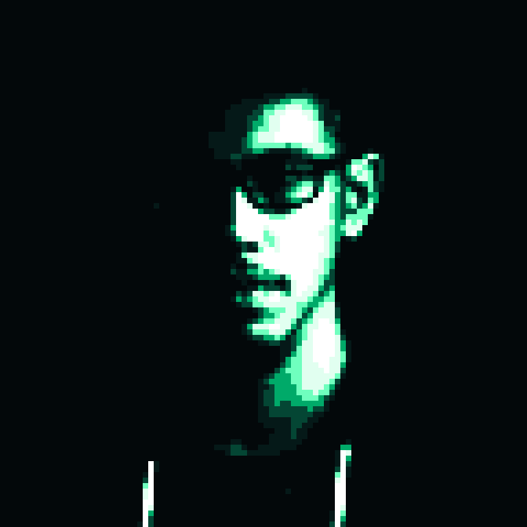

Platform audit keamanan WiFi & Bluetooth berbasis ESP32. Dirancang untuk laboratorium, edukasi, dan pengujian keamanan berizin.
Berjalan di ESP32 mungil dengan layar dan tombol — tanpa perlu laptop saat pengujian lapangan.
Kode terbuka dan modular — mudah dipelajari, dimodifikasi, dan diperluas sesuai kebutuhan lab.
Fokus pada security awareness dan pengujian berizin, bukan eksploitasi ilegal.
Dari pemantauan pasif hingga pengujian aktif, semua terintegrasi dalam satu perangkat.
Memindai jaringan sekitar beserta SSID, BSSID, channel, RSSI, dan vendor perangkat.
Pengujian ketahanan jaringan terhadap frame deautentikasi dan disasosiasi.
Simulasi AP palsu dan portal login untuk pelatihan security awareness.
Memetakan perangkat Bluetooth dan menguji iklan BLE (Fast Pair, iBeacon, dll).
Menangkap handshake WPA2 (M1–M4) untuk keperluan audit keamanan.
Ping sweep, port scan, dan banner grabbing untuk memetakan jaringan internal.
Kendalikan perangkat dari browser HP/laptop melalui access point internal.
Kirim hasil pengujian ke dashboard web untuk diakses dari mana saja.
Flash firmware NISKALA ke ESP32, lalu navigasi lewat layar dan dua tombol.
Scan, deauth, Evil Twin, BLE, EAPOL — semuanya dari menu atau Web Remote.
Kirim hasil ke Cloud Dashboard dan tinjau lewat browser.

NISKALA lahir dari eksplorasi terhadap keamanan jaringan nirkabel, perangkat embedded, dan pembelajaran keamanan siber yang bertanggung jawab.
Dashboard cloud menampilkan data Probe Sniff, Karma, Password, dan BLE yang dikirim dari perangkat NISKALA.
Masuk ke DashboardGunakan hanya pada perangkat dan jaringan milik sendiri atau dengan izin tertulis. Jangan mengganggu jaringan publik, mencuri data, atau menguji target tanpa otorisasi. Pengguna bertanggung jawab penuh atas penggunaannya.